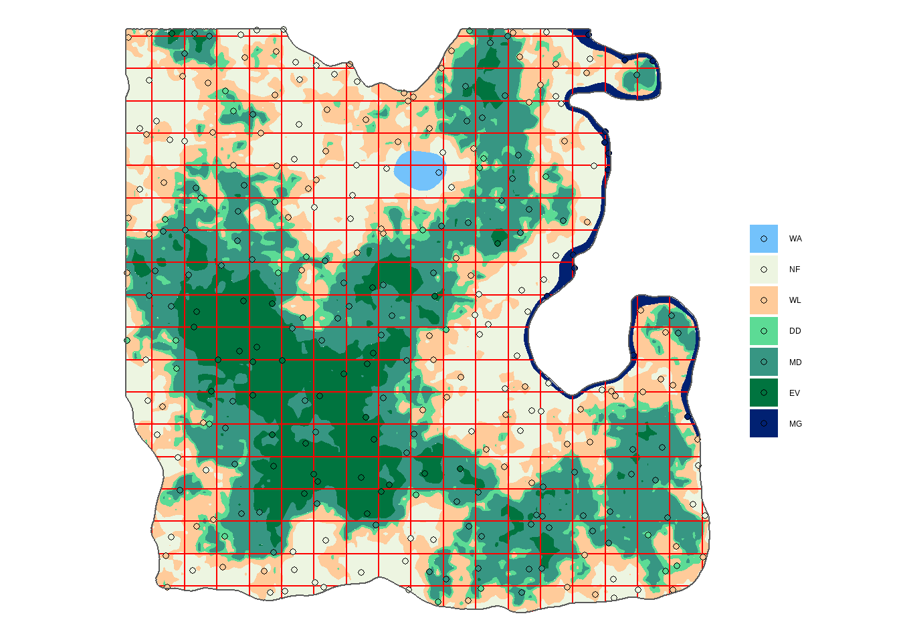
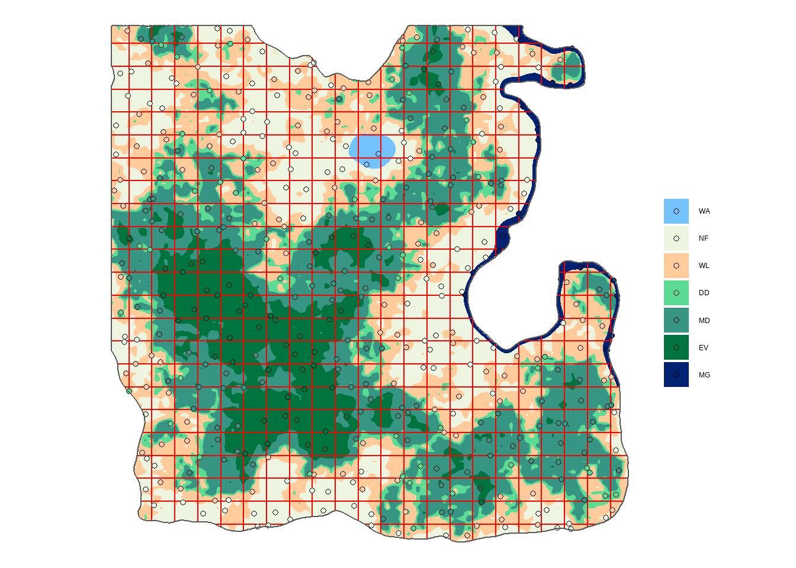

7 Uneven Systematic Sampling
In the NFI eLearning Module 3: Sampling, we have seen that systematic sampling are popular for their increased precision and low auto-correlation compared to simple random sampling. We have also seen that their main caveat is that a systematic sampling is based on only one randomization. One way to avoid this limitation is to create an
An uneven systematic sample starts with the same grid as a systematic sampling, but instead of placing plots at the center or corner of the grid, we allocate them randomly inside each square of the grid.
Demo
We will demonstrate the R commands for the 5 x 5 km grid and let you practice with the 4 x 4 km grid that we have selected for Louland’s NFI. For making random points within a grid, we will use the function st_sample(), but this time we will apply it to the grid polygons and the size of the sample is 1 but repeated for each points in the grid.
set.seed(10)
sf_points_uneven <- st_sample(x = sf_grid5, size = rep(1, nrow(sf_points5)))Same as before, we can overlay the results with the land cover shapefile to see how many plots would fall on forests.
sf_plot_uneven <- sf_points_uneven %>%
st_as_sf() %>%
st_join(sf_lc) %>%
mutate(lc = fct_reorder(lc, lc_id)) %>%
filter(!is.na(lc))Then a quick map is always a good idea to see if everything looks at it should. In this case, we should not see more than one pot in each grid square.
ggplot() +
geom_sf(data = sf_lc, aes(fill = lc), color = NA) +
geom_sf(data = sf_grid5, fill = NA, col = "red") +
geom_sf(data = sf_plot_uneven, aes(fill = lc), shape = 21) +
geom_sf(data = sf_admin, fill = NA) +
scale_fill_manual(values = pal) +
labs(fill = "", color = "") +
theme_void()
Create uneven systemic sampling for the 4 x 4 km grid
Your turn! Create an uneven systematic sample based on the 4 x 4 km grid.
- First you need to create the 4 x 4 km grid. Have a look at the section 2 for code block if you don’t remember the function inputs, and adapt it to the 4 x 4 km grid.
# Console
sf_grid4 <- st_make_grid(sf_lc, cellsize = c(___, ___), what = ___, offset = offset) %>%
st_intersection(sf_admin)## Solution
sf_grid4 <- st_make_grid(sf_lc, cellsize = c(4000, 4000), what = "polygons", offset = offset) %>%
st_intersection(sf_admin)- Create the points. We have just created the grids canvas
sf_grid4and we have already created the grid pointssf_points4in the section 3. Keep the seed 10 to have comparable results with all the users of this lesson.
NB: This operation is calculation intensive and may take a few minutes to complete.
## Console
set.seed(10)
sf_points4_uneven <- st_sample(x = ___, size = ___) %>%
st_as_sf()## Solution
set.seed(10)
sf_points4_uneven <- st_sample(x = sf_grid4, size = rep(1, nrow(sf_points4))) %>%
st_as_sf()- Add the land cover information with
st_join().
## Console
sf_plot4_uneven <- ___ %>%
___(___) %>%
___(lc = fct_reorder(lc, ___)) %>%
___(___)## Solution
sf_plot4_uneven <- sf_points4_uneven %>%
st_join(sf_lc) %>%
mutate(lc = fct_reorder(lc, lc_id)) %>%
filter(!is.na(lc))
- Show the plot locations on a map with a
ggplot().
## Console
#### Tip
ggplot() +
geom_sf(data = sf_lc, aes(fill = lc), color = NA) +
geom_sf(data = ___, fill = NA, col = "red") +
geom_sf(data = ___, aes(fill = lc), shape = 21) +
geom_sf(data = ___, fill = NA) +
scale_fill_manual(values = ___) +
___(fill = "", color = "") +
theme_void()## Solution
ggplot() +
geom_sf(data = sf_lc, aes(fill = lc), color = NA) +
geom_sf(data = sf_grid4, fill = NA, col = "red") +
geom_sf(data = sf_plot4_uneven, aes(fill = lc), shape = 21) +
geom_sf(data = sf_admin, fill = NA) +
scale_fill_manual(values = pal) +
labs(fill = "", color = "") +
theme_void()
- And finally calculate the number of plots per land cover type.
## Console
#### Tip
nplot4_uneven <- ___ %>%
as_tibble() %>%
group_by(___) %>%
summarise(n = n())
nplot4_uneven## Solution
nplot4_uneven <- sf_plot4_uneven %>%
as_tibble() %>%
group_by(lc) %>%
summarise(n = n())
nplot4_uneven# A tibble: 7 x 2
lc n
<fct> <int>
1 WA 2
2 NF 107
3 WL 108
4 DD 43
5 MD 124
6 EV 51
7 MG 18Well done! We have one of the best possible simple sampling design, combining strengths of both systematic and random sampling.
Proportion of plots per forest land cover
Let’s compare how many plots fell in each land cover class of Louland for our three “simple” sampling methods (Table 7.1). We can see that our three simple sampling methods gave similar plot allocation per land cover. There is plus or minus 3 points between their proportion and the area proportion of the land cover classes.
| Land cover | Area | perc. | # plots | perc. | # plots | perc. | # plots | perc. |
|---|---|---|---|---|---|---|---|---|
| WL | 152.70 | 30 | 89 | 28 | 93 | 30 | 108 | 31 |
| DD | 63.98 | 13 | 44 | 14 | 51 | 16 | 43 | 12 |
| MD | 186.39 | 37 | 116 | 37 | 108 | 35 | 124 | 36 |
| EV | 88.91 | 18 | 58 | 19 | 54 | 17 | 51 | 15 |
| MG | 10.36 | 2 | 6 | 2 | 7 | 2 | 18 | 5 |
| Total | 502.34 | 100 | 313 | 100 | 313 | 100 | 344 | 100 |
Let’s refer back to the NFI eLearning Module 3: Sampling. The differences between these sampling methods doesn’t translate to major differences in plot allocation per land cover classes, but rather to statistical considerations.
Which of the following assertions are true?
- Simple random sampling (SRS) is not suitable because you have no control over plot distribution.
- SRS is less suitable that systematic sampling methods as SRS plots have a higher chance of autocorrelation.
- Systematic sampling consist of one sample, it only borrows SRS stats because they are considered conservative.
- Uneven systematic sampling allows to use SRS statistical formulas and plot distribution has less autocorrelation than SRS.